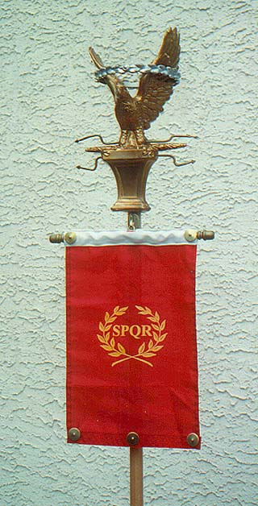
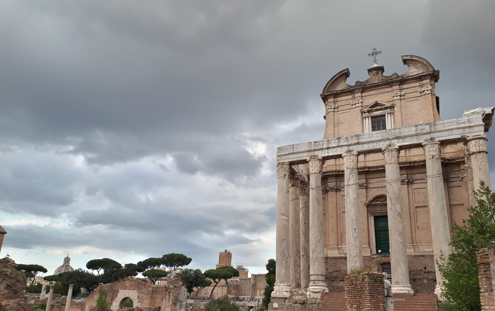
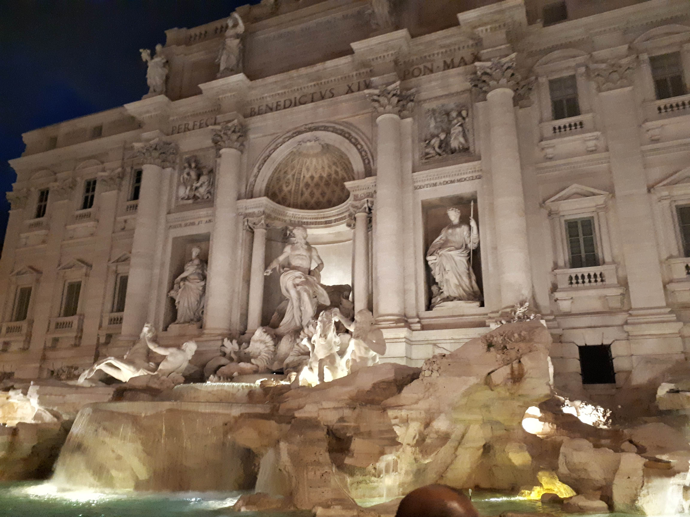

Also known as The Eternal City, Rome is one of the oldes continually inhabited cities in Europe, and has an extensive history spanning three milennia
Javier Lodeiro
19/10/2022
According to the legend, two babies were found by a wolf and fed by them until they could live for themselves. Those babies were Romulus and Remus, the former being the founder of the city. For the next 244 years it would be a monarchy, and would get 7 kings over its lifetime. In 509 BCE, the roman populace expelled the king and established an oligarchic Republic. During this period, Rome would grow into a mediterranean superpower, and would go on to defeat its rival, Carthage, in the Punic Wars, of which there were three and Rome won all of them. It would end with the murder of Julius Caesar
Stand with the symbol of the Roman Senate
Following Julius Caesar's death and a civil war, Augustus took charge of Rome and made it an Empire. This stage was very extense and irregular. It saw the maximum expansion of the Roman borders, but also frequent periods of inestability. Rome would also peak in population at over a million people, making it the largest city on earth. But shortly afterwards, it would begin to decline, ending in the capital switch to Constantinople, taking away the spot Rome used to occupy, the divide of the empire in two and frequent barbarian raids
Ruins of the roman forum
In the early medieval period, the religion of Rome would change to christianism, and it would see the rise of the church, religious buildings built, and the city would change hands between other nations frequently. Approaching the 15th century, the papacy would return to Rome after a period in Avignon. The old basilica of Saint Peter's would be demolished and a new one built, in which Michelangelo played an essential role. By the 19th century, a strong sense of national identity had grown in Italy, and under king Vittorio Emanuele II and general Garibaldi, the whole peninsula would be unified in 1870, when Rome was captured. In the 20th century, Mussolini would march on the city with his black shirts, become dictator, give the church an independent country (The Vatican) and partake in the second World War. Finally, in 1945 Italy would become the republic we know today, and later in the century join the European Union.
Fontana di Trevi, a very popular baroque landmark
copyright paragraph (not finished yet)